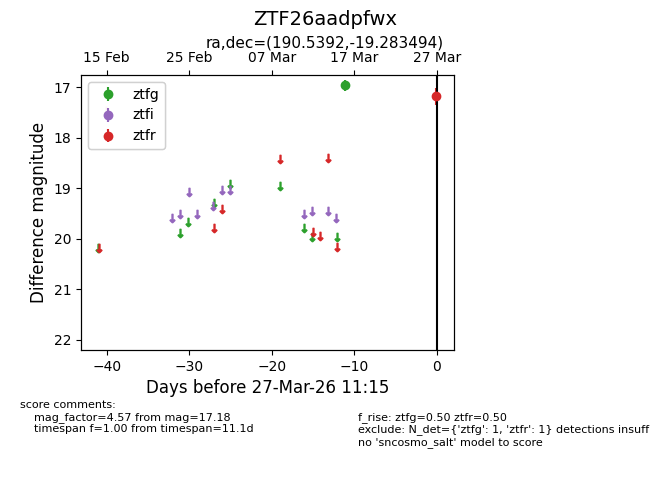
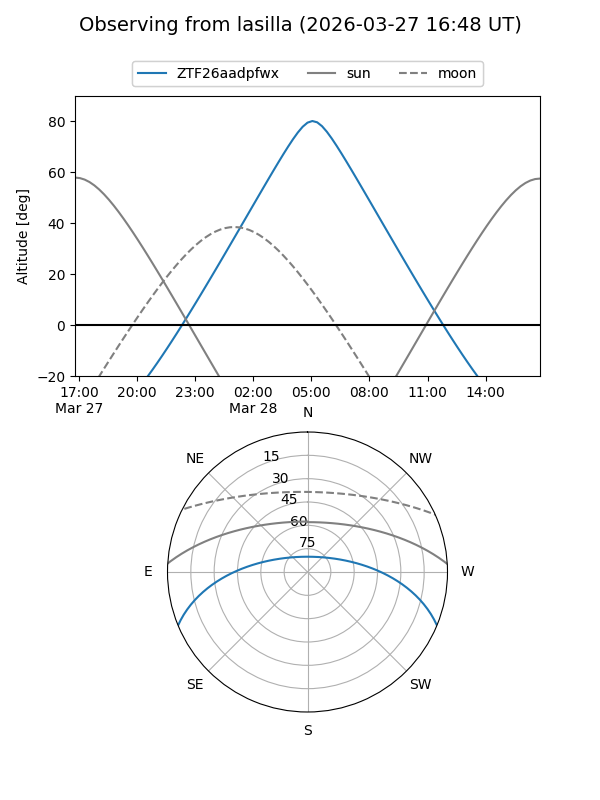
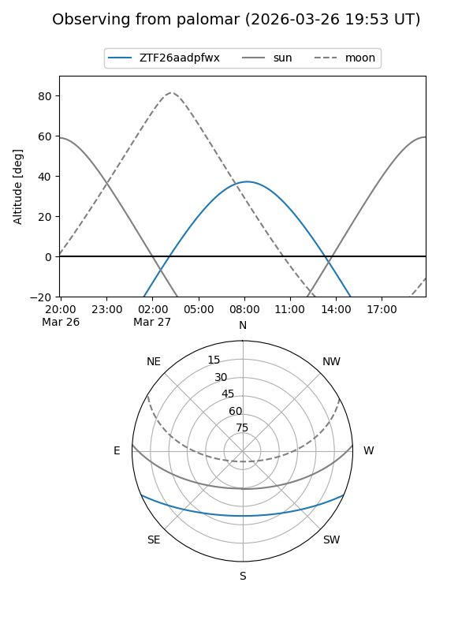

ZTF26aadpfwx
Target ZTF26aadpfwx at 2026-03-27 11:18
Aliases and brokers:
FINK: link
Lasair: link
ALeRCE: link
alt names
ZTF26aadpfwx (ztf,fink_ztf)
Coordinates:
equatorial (ra, dec) = 190.5392,-19.28349
equatorial (HMS+DMS) = 12:42:09.42,-19:17:00.58
galactic (l, b) = (299.9105,+43.53380)
Flags:
Photometry:
last ztfg=16.96, ztfr=17.18
1 ztfg, 1 ztfr detections
Lightcurve

Visibility


Additional plots